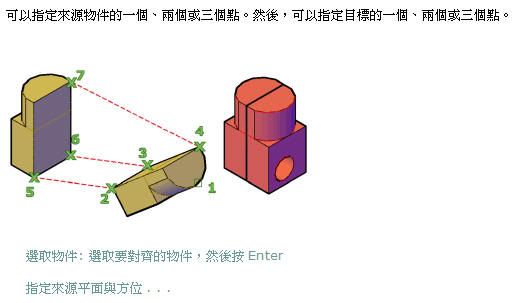

3D建模時關於模型的對齊有很多方式，除了旋轉UCS調整工作平面或是3D旋轉等方式，這裡AutoCAD還提供了一種對齊方式供各位參考，並且不同的版本對齊方式也不太一樣!
AutoCAD 2007之後的版本在 3D 中，使用 3DALIGN 指令指定最多三個點來定義來源平面，然後指定最多三個點來定義目標平面。

1.物件上的第一個來源點 (稱為基準點) 始終被移至第一個目標點。
2.指定第二個來源點或目標點將旋轉所選取的物件。
3.來源或目標中的第三個點會導致所選取物件的進一步旋轉。
影片展示(建議使用高畫質HQ播放較佳)：
PS:如果不習慣使用 3DALIGN 指令，在AutoCAD 2007以上版本你仍然可以使用 ALIGN 指令來進行對齊!!